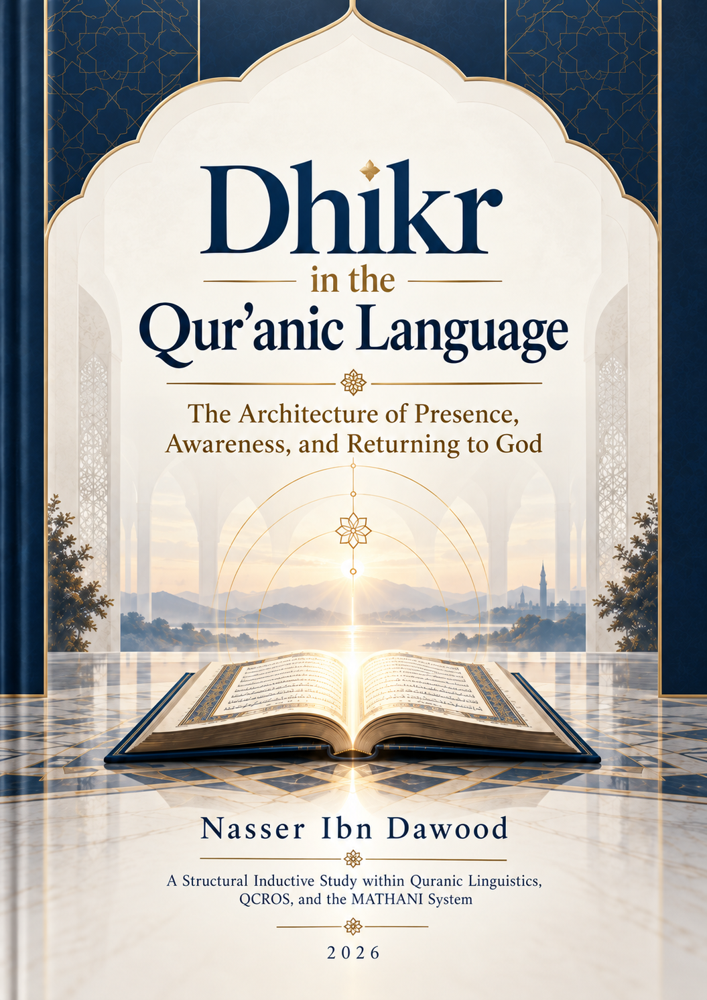

123. Dhikr in the Qur’anic Language — The Architecture of Presence, Awareness, and Returning to God

Research candidate: the source states that final scholarly review precedes public release. A contextual study of dhikr, revelation, reminding, prayer, and the effects of remembrance, preserving open questions and the provisional status of structural hypotheses. Condensed conceptual English adaptation.
This is a condensed conceptual English edition, not a complete word-for-word translation. The Arabic text remains the primary source for detailed analysis and references. Status: research candidate; the source requires final scholarly review before public release, not a final verified edition.
قراءة PDF داخل الموقع / Read the PDF on this website
جارٍ تجهيز القارئ… / Preparing the reader…
Book Summary, Table of Contents & Excerpt
Dhikr in the Qur’anic Language
The Architecture of Presence, Awareness, and Returning to God
A Condensed Conceptual Adaptation of the Arabic Study
Author: Nasser Ibn Dawood
Year: 2026
Research method: Qur’anic Linguistic Inquiry · QCROS · Mathānī
Edition status: CONDENSED ADAPTATION — RESEARCH CANDIDATE
I. The Global Knowledge Manifesto
Knowledge is a universal right. The author firmly believes that wisdom should not be locked behind paywalls or language barriers.
Global Access Policy: All books in this library are available for free in multiple digital formats (PDF, HTML, DOCX, TXT).
The Digital Library: As of early 2026, the collection hosts 236 volumes (118 in Arabic and 118 in English), fully optimized for AI-assisted research and digital archiving.
Official Platforms: Main Website: nasserhabitat.github.io/nasser-books/
GitHub: nasserhabitat/nasser-books
This manifesto is reproduced here as supplied by the author for this condensed edition.
II. Translator’s Note: The Bridge of Meaning
This English edition is a condensed conceptual adaptation. It is not a word-for-word translation, but rather an "extraction of essence." It presents the core philosophical framework in accessible English, omitting the exhaustive linguistic debates and classical references found in the original Arabic text.
For the academic researcher: The original Arabic version remains the primary source for comprehensive linguistic analysis, detailed exegesis (Tafsir), and the complete bibliography.
This adaptation also preserves the methodological status of the Arabic edition. A claim marked OPEN remains open; a CANDIDATE remains a candidate; a RESISTED or STRONGLY RESISTED claim is not revived through simplification; and a CLOSED result remains closed only within its declared scope. The aim is clarity without scientific inflation.
Key Qur’anic terms are sometimes retained in transliteration—such as nafs, tawaffī, barzakh, and baʿth—when a single English equivalent would prematurely narrow the field under study.
Executive Abstract
Dhikr is often translated simply as “remembrance of God.” That rendering is useful in many passages, but the Arabic study from which this volume is adapted argues that it does not exhaust the Qur’anic distribution of the root dh-k-r. The revealed message is called dhikr; human beings are instructed to remember God; God Himself is described as remembering His servants; prophets are commanded to remind; and remembrance is associated with awareness, heedfulness, moral responsibility, historical memory, and sometimes distinction or honor. A single reductive definition cannot bear all these functions without losing the grammatical agents and textual contexts that establish them.
The central proposal of the book is therefore neither that all these uses are synonyms nor that they refer to entirely separate objects. Instead, they should be studied as a network of related, context-dependent functions. Four names of revelation—kitāb (Book), qurʾān (recitation/Qur’an), dhikr (remembrance or reminder), and furqān (criterion or differentiation)—may describe overlapping divine discourse while directing attention to different modes of its reception and operation. This functional hypothesis remains a CANDIDATE, not an established universal law.
A particularly fruitful image in the author’s earlier works is the “harvest of reflection”: careful reading may yield renewed recognition and discernment. Yet this is a MODEL, not a license to redefine the revealed dhikr as a product of the reader’s mind. Sūrat al-Ḥijr 15:9 and Sūrat al-Naḥl 16:44 call the descending message itself dhikr. Whatever emerges in the reader must remain answerable to that prior, revealed source. The book insists on the distinction between divine discourse, human understanding, and the practical effects of understanding.
The discussion proceeds from method and linguistic distribution to revelation, the remembering person, prayer, emotional experience, obstacles to remembrance, and finally justice and responsible action. Throughout, the Qur’an is the governing corpus; received reports, dictionaries, and commentaries are investigated as historical witnesses rather than made the owners of Qur’anic terminology. Explanatory models are tested against passages that resist them. A moving metaphor is not evidence; co-occurrence does not prove causation; and textual sequence does not necessarily establish a universal chronological process.
How to Read This Edition
The English text follows the six-part architecture of the Arabic book but compresses detailed concordances, commentarial comparisons, technical morphology, and editorial research logs. Its purpose is to let an international reader understand the research question, follow the argument, and see exactly where the author refuses premature certainty. It is not a substitute for the original Arabic corpus study.
Read the book in the following order of inquiry: READ the verse; COLLECT its related passages; COMPARE convergences and differences; FORMULATE a hypothesis; TEST it against resistant passages; ASSIGN a scientific status; and CONTINUE rather than force closure. “Supported in this verse” is not equivalent to “proved across the entire root.”
Statements identified as Qur’anic observations report what a passage explicitly says or closely entails. An interpretation is a reasoned account of those observations. A MODEL is an educational or operational map that may assist reading but must not be confused with a lexical definition. A CANDIDATE has meaningful textual support but unresolved counter-tests. OPEN means inquiry continues; REJECTED means the broad formulation failed relevant tests. CLOSED is reserved for a result that survived its declared examination, not for a proposition that merely sounds compelling.